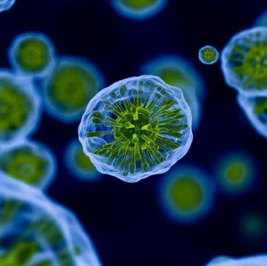
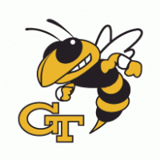
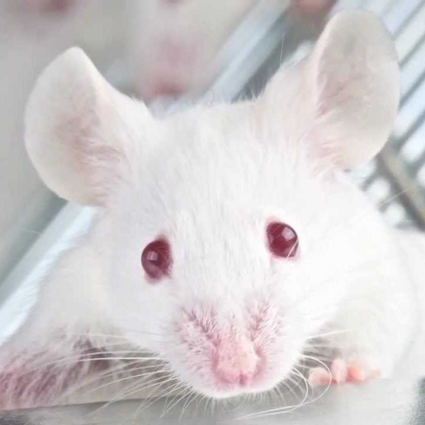
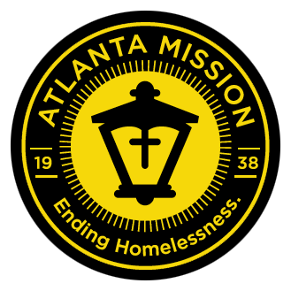
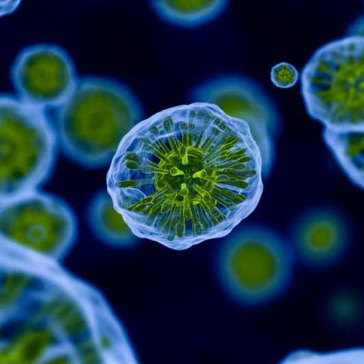
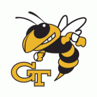
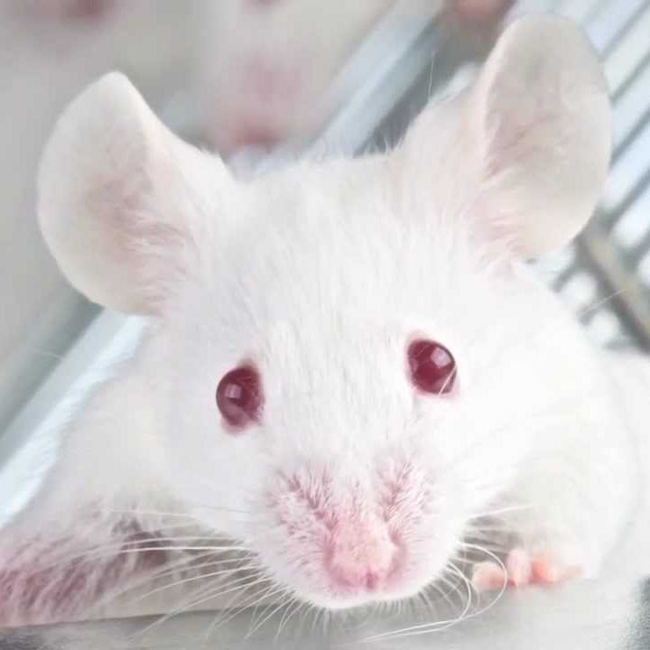
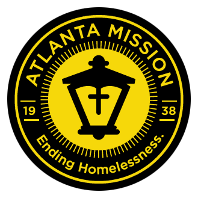

Experience
 Invitroscan Co-Founder
 Computer Organization Teaching Assistant
Mailchimp
St Jude Medical
 GT Bionics Lab
Freshman Servant Leadership Organization
 Atlanta Mission Homeless Shelter


 Invitroscan Co-Founder
 Computer Organization Teaching Assistant
Mailchimp
St Jude Medical
 GT Bionics Lab
Freshman Servant Leadership Organization
 Atlanta Mission Homeless Shelter
Created July 19, 2017
Invotroscan is a company that I created with fellow student with the goal to detect and prevent sepsis. We are developing a diagnostic based off of a novel protein that works similarly to our own immune system and can detect bacteria in a sample regardless of the strain. Sepsis is both the deadliest and most expensive disease in US hospitals so our diagnostic test stands to make a significant impact. You can learn more about our company and it's involvement with Georgia Tech's CREATE-X startup incubator here.
After beginning to take serious CS classes, I fell in love with the material in my computer organization class. I know am an undergraduate teaching assistant for the course, teaching students about digital logic, assembly, and C. I lead bi-weekly recitations and tutor students in office hours.
This summer (2017) I worked for a the quirky and awesome company Mailchimp in my home city of Atlanta. I worked on a small team to deploy a new shard of servers that would host their application for 1.5 million users. I learned about server and systems management over the course of the summer.
At St. Jude Medical I worked to develop tests in order to ensure the accuracy and safety of the Merlin computers - laptops used by cardiologists to interface with post-implant pacemakers in patients. After noticing a way to dramatically improve one of their timing-benchmark tests (which at the time was done manually), I was put on my own project to develop the test. The finished tool has and will save countless senior-developer hours and increase the frequency of this benchmark testing.
As part of a team with the goal of developing a magnetic tongue implant that would be used by quadriplegic patients to drive their wheelchair, I was in charge of writing MATLAB code to process millions of lines of data collected from rat cages. These rats had had metal beads implanted in their tongues and we were testing their response to the implant by collecting data of thier water-bottle licking patterns and visualizing that data to see pre- and post-operation patterns.
I joined the first year of this organization and was chosen to be president in its second year. Our goal was to inspire freshman and teach them the leadership skills to plan events that got students accross campus to be involved in philanthropic activities. Several of these projects got hundreds of students involved, whether to weave blankets or to make sandwhiches for the needy, and engaged these students to interact with the community.
I organized and lead 8 weekly trips of 5-7 volunteers to two Atlanta Mission homeless shelters in order to serve breakfast to the homeless and engage with one of the less fortunate sides of our community. I expanded the pre-existing program that involved about 15 volunteers per week to over 50 people per week.